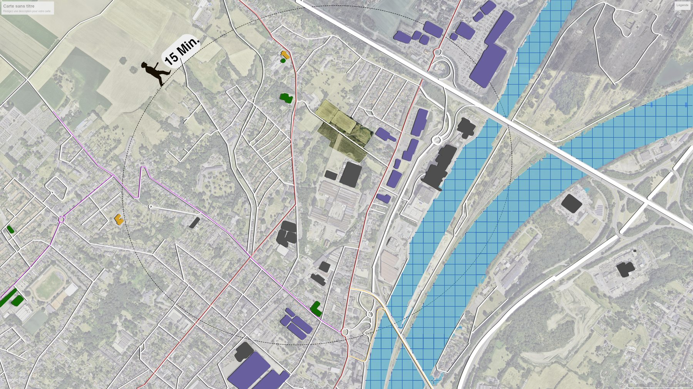

02
Approche & méthode
Concevoir un projet connecté à son milieu exige une phase d'analyse rigoureuse — de la lecture du territoire à la représentation technique.

01
Lecture du territoire
Identification des pôles d'attractivité — écoles, commerces — et analyse des nœuds modaux : transports, réseaux cyclables et routiers.
02
Analyse de site
Étude de l'ensoleillement, du ruissellement des eaux, des vents dominants et repérage des nuisances sonores et visuelles.
03
Conception & technique
Plans de composition, coupes techniques, palette végétale — traduire l'intention spatiale en documents constructibles.
04
Visualisation & ambiances
Rendus 3D, matérialité et lumière — donner à ressentir un espace avant qu'il n'existe.
Écosystème logiciel
Plans & conception technique
Autodesk AutoCAD
Vectorworks Landmark
SketchUp
Visualisation & rendu
D5 Render
Lumion
Suite créative Adobe
Photoshop
Lightroom
Illustrator
InDesign
Premiere Pro